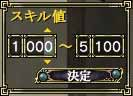

目次
>
ゲームについて
>
日本Falcom攻略
>
Sorcerian Online
>
チュートリアル
>
検索
Sorcerian Online
|
概要
|
チュートリアル
|
|
検索 に戻る
|
ホストゲーム設定(検索してもらうために)
ホストゲーム設定
公開・非公開
目的
スキル範囲
コメント
パスワード
ホストゲーム設定
ホストゲームの設定はメニュー1ページ目の「
サーチ
」から「
ホストゲーム設定
」を選択してください。
設定を変更した場合は「設定を反映」を選んでください。また、
ゲームを終了してもホストゲームの設定は維持されます
。
(メニュー)
(ホストゲーム設定)
公開・非公開
ホストゲームを「公開」にしないと、他のプレイヤーが入ってきません
。逆に非公開にしていれば、他のプレイヤーが絶対に入ってきません。
ポートを開放していない場合はホストゲームを公開しないでください。
パスワードを設定してホストを公開し、そこで個人ショップの宣伝をするのは、ホストゲームを検索するときに邪魔になるのでやめてください
。
目的
「目的」を設定しておくと、
同じ目的を持ったプレイヤーがゲームにログインしてくる可能性が高まります
。ソロプレーでのレベル上げが難しくなったり、named を倒すクエストをクリアーするために他のプレイヤーを招くときになどは有効でしょう。
「特になし」に設定したとき、あなたと異なる目的を持ったプレイヤーがログインしてきても、それは目的を設定しなかったあなたの責任ですので悪しからず。
スキル範囲
まだ試したことはないのですが、スキル範囲を設定することで
検索しているプレイヤーにあなたが必要としているクラスレベルを提示できます
。以前書いてあった、ログインするプレイヤーを
制限する機能はありません
。
スキル範囲で入力する値は、2つの欄に区切ってあります。左側の1桁だけ入力する方にはクラスのランクを、右の3桁まで入力する方にはクラスのレベルを入力してください。

例)
ランク1でクラスレベル80～90の人を招きたい・・・1, 80 ～ 1, 90 を入力
ランク2以上の人を招きたい・・・2, 000 ～ 5, 100 を入力
ランク1の人を招きたい・・・1, 000 ～ 1, 100 を入力
ランク2でクラスレベル80台の人を招きたい・・・2, 80 ～ 2, 80 を入力
コメント
ホストゲームを公開するときに
一番重要なのが「ゲームコメント」
です。ここに”目的”やどのようなプレイヤーを募集しているかなどを書いておくと非常に便利です。
検索する側はこのコメントを見てゲームにログインするかを判断していることが多いので、魅力的なコメントを書くと効果的でしょう。
パスワード
パスワードは特別な理由があってログインするプレイヤーを制限したいときに使います。ついでに書いておくと、
個人ショップを宣伝するための機能でもありません
。
ゲーム内で親しくなったプレイヤーだけでチャプターを進める場合などは有効でしょう。
|
検索 に戻る
|
|
概要
|
チュートリアル
|
Sorcerian Online
|
目次へ戻る
|
ページの上部へ
|